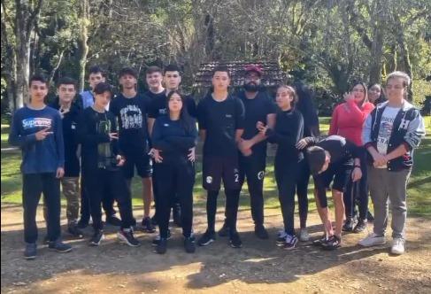
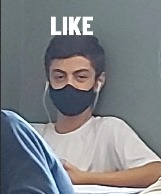
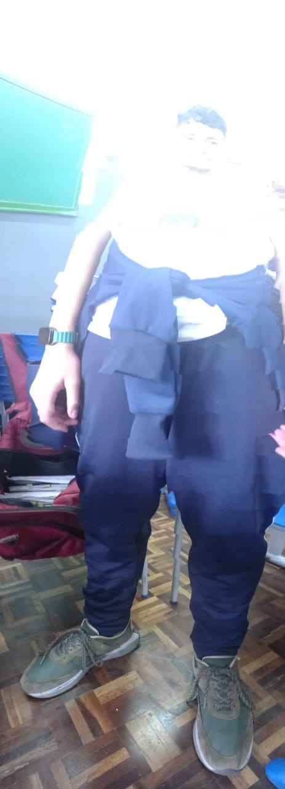

Aviso aos lerdos (buiu) passe o mouse pelas imagens
No meu fundamental eu era uma criança bem desgraçada, gostava de fazer tudo que não podia, lembro me de uma vez em que estava chovendo e eu atentado que era, fiquei brincando com os colegas embaixo de uma cascata de água, isso dentro do colégio, aquele dia eu levei um bilhete para a minha mãe assinar kk, eu conversava com todo mundo, era divertido!
Ester egg
No meu ensino médio eu já perdi algumas amizades que eu tinha no fundamental, pois eu mudei de colégio, para o Morelli pra ser mais específico, mas ainda sim fiz uns amigos, inclusive o Leandro do 3F, ele é um desgraçado kk, mas depois que passou a pandemia o único amigo verdadeiro que me restou foi realmente ele, hoje sou mais quieto na minha, e odeia com todas as forças o colégio, ainda bem que está acabando!